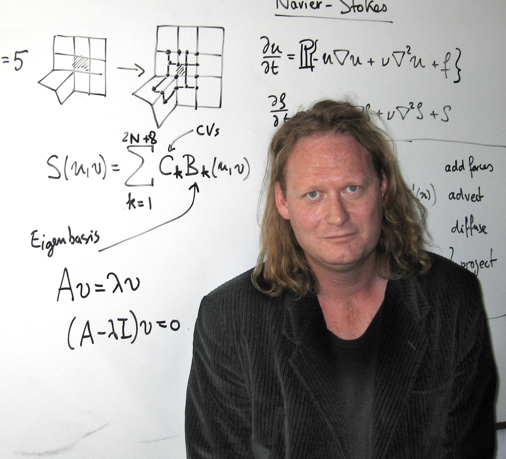
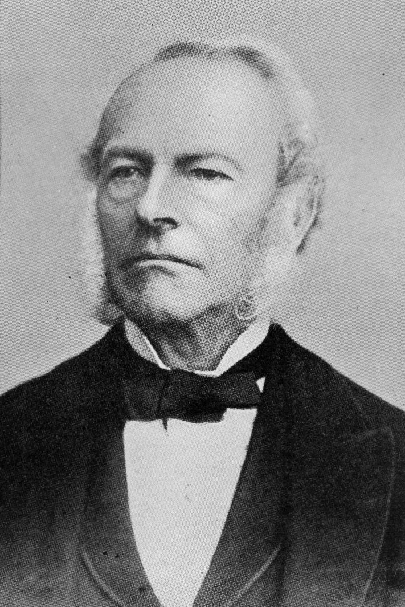

Stable Fluids is one of my favorite papers. Its blend of mathematics, numerical analysis, computer graphics, and physics has been a tremendous source of inspiration for me: a few elegant ideas become a simulation one can immediately see and interact with.

A moving cloud of smoke looks complicated. Its solver need not be. Jos Stam’s Stable Fluids [1] is built from a handful of operations with clear geometric meanings: carry a field along trajectories, smooth it, and enforce incompressibility by an orthogonal projection.
The trick is not to solve the entire fluid equation at once. Split it into manageable pieces, and choose each piece to avoid a familiar numerical instability. On a periodic domain, the pressure solve becomes particularly elegant: each Fourier coefficient is projected onto a line perpendicular to its wave vector. Stam’s later implementation notes [4] and Bridson’s book [5] are useful companions.

Velocity, pressure, and the constraint
Work on a periodic square \([0,L)^2\). The velocity \(u(t,x)\in\mathbb R^2\) solves the incompressible Navier–Stokes equations
\[ \partial_tu+(u\cdot\nabla)u =-\nabla p+\nu\Delta u+f, \qquad \nabla\cdot u=0. \]The force \(f\) pushes the fluid and the viscosity \(\nu\ge0\) smooths velocity variations. Pressure is the multiplier enforcing incompressibility: a parcel may move or deform, but its volume cannot change. Dye is a separate passive scalar \(a\), evolving by
\[ \partial_ta+u\cdot\nabla a=\kappa\Delta a+s, \]where \(\kappa\ge0\) is dye diffusivity and \(s\) a dye source. Since \(\nabla\cdot u=0\), the advection term can equally be written \(\nabla\cdot(au)\). Dye does not feed back into the velocity in the simple model used here.
First understand the projection
Suppose \(w\) is a provisional velocity that may compress the fluid. Remove a gradient:
\[ \mathsf P w=w-\nabla\phi, \qquad \Delta\phi=\nabla\cdot w, \qquad \int\phi=0. \]The Poisson equation is compatible because a periodic divergence has integral zero. The field \(\mathsf Pw\) is divergence free by construction.
Proposition 1 (the pressure step is an orthogonal projection). In periodic \(L^2\), \(\mathsf Pw\) is the unique closest divergence-free field to \(w\). In particular,
\[ \|w\|_{L^2}^2 =\|\mathsf Pw\|_{L^2}^2+\|\nabla\phi\|_{L^2}^2. \]Proof: gradients are perpendicular to incompressible motion
For any divergence-free \(z\), periodic integration by parts gives \(\int\nabla\phi\cdot z=-\int\phi\nabla\cdot z=0\). Hence the decomposition \(w=\mathsf Pw+\nabla\phi\) is orthogonal. More generally,
\[ \|w-z\|_{L^2}^2 =\|\nabla\phi\|_{L^2}^2+\|\mathsf Pw-z\|_{L^2}^2, \]so the unique minimum occurs at \(z=\mathsf Pw\). \(\square\)
This is the Helmholtz–Hodge decomposition, or Leray projection. Projection methods for incompressible flow precede Stable Fluids; the classical work of Chorin and Temam is fundamental [2], [3]. Stam’s contribution combines this structure with a particularly robust, graphics-friendly advection step.
One time step, four operations
Let \(h>0\) be the time step. A first-order splitting in the order of Stam’s 1999 presentation is
\[ \begin{aligned} w_1&=u^n+hf^n &&\text{add forces},\\ w_2(x)&=\mathcal I[w_1](x-hw_1(x)) &&\text{advect},\\ (I-h\nu\Delta)w_3&=w_2 &&\text{diffuse},\\ u^{n+1}&=\mathsf Pw_3 &&\text{project}. \end{aligned} \]Here \(\mathcal I\) is periodic bilinear interpolation of the grid values. The pressure potential \(\phi\) in the projection has the units of \(hp\); one should not identify it directly with the continuous pressure without that time-step scaling.
Why trace backwards? To fill a grid point at the next time, ask where the arriving fluid came from. The first-order answer is \(x-hw_1(x)\). Interpolate the old field there. Forward tracing would leave the grid and create a separate problem of depositing particles back onto it.
Dye is advected by the resulting projected velocity, with the same backward-tracing operation, then optionally diffused. A mouse drag supplies a localized velocity impulse and a positive dye source. This is an externally forced simulation, not an unforced energy-decay experiment.
Fourier projection: one small matrix per wave
For a Fourier mode \(e^{ik\cdot x}\), with \(k=(2\pi/L)(j_1,j_2)\), differentiation becomes multiplication by \(ik\). Thus, for \(k\ne0\),
\[ \widehat\phi(k)=-\frac{i\,k\cdot\widehat w(k)}{|k|^2}, \qquad \widehat{\nabla\phi}(k) =\frac{k(k\cdot\widehat w(k))}{|k|^2}. \]Proposition 2 (spectral pressure and diffusion). The periodic projection is
\[ \widehat{\mathsf Pw}(k) =\left(I-\frac{kk^\top}{|k|^2}\right)\widehat w(k) \quad(k\ne0), \qquad \widehat{\mathsf Pw}(0)=\widehat w(0). \]Implicit velocity diffusion multiplies each coefficient by \((1+h\nu|k|^2)^{-1}\). The two operations commute and can be combined into a single Fourier pass.
Proof: solve the scalar Poisson equation mode by mode
The Fourier Poisson equation is \(-|k|^2\widehat\phi=ik\cdot\widehat w\). Solving it gives the formula above; subtracting its gradient gives the projector. The matrix \(I-kk^\top/|k|^2\) removes the component parallel to \(k\), so its output has zero Fourier divergence. The zero mode is the mean velocity, already divergence free, and remains unchanged. Finally the diffusion equation gives \((1+h\nu|k|^2)\widehat w_3=\widehat w_2\). Both multipliers act on each mode independently, and the diffusion multiplier is scalar. \(\square\)
In practice: transform the two velocity components, apply these multipliers, inverse transform. An FFT makes the cost \(O(M\log M)\) for \(M\) grid cells; no iterative pressure solver is hidden inside this step. The experiment uses a genuine mixed-radix FFT on a \(45\times45\) grid.
What “stable” really means
Proposition 3 (three separate stability facts). Bilinear semi-Lagrangian advection preserves the range of each transported scalar component. Implicit spectral diffusion is an \(L^2\) contraction for every \(h>0\). Pressure projection is also an \(L^2\) contraction.
Proof: convex weights, bounded multipliers, and orthogonality
A bilinear interpolated value is a convex combination of four old values, even if the backtrace crosses many grid cells. It therefore lies between the old minimum and maximum. Every diffusion multiplier lies in \((0,1]\), so Parseval’s identity gives its \(L^2\) contraction. Proposition 1, or the orthogonal matrix in Proposition 2 at each Fourier mode, gives the projection contraction. \(\square\)
These are statements in different norms. They do not combine into a universal monotone kinetic-energy theorem for the entire discrete split scheme. In particular, bilinear advection is not generally a grid-mass-preserving operator, nor automatically an \(\ell^2\) contraction. Increasing \(h\) can make a bounded animation very inaccurate: the backtrace is less precise, splitting error grows, and interpolation introduces numerical diffusion. Stability is not an accuracy certificate.
One more discretization detail matters for dye. Spectral implicit diffusion is \(L^2\)-stable but its truncated-grid kernel need not preserve positivity. We instead diffuse dye with the periodic five-point Laplacian \(\Delta_h\). Its implicit inverse is positive, and the same FFT diagonalizes it, with multiplier
\[ \left[1+\frac{4h\kappa}{\Delta x^2} \left(\sin^2\frac{\pi j_1}{N} +\sin^2\frac{\pi j_2}{N}\right)\right]^{-1}. \]The maximum-principle argument is elementary: at a negative minimum of a hypothetical solution of \((I-h\kappa\Delta_h)a=b\ge0\), one has \(\Delta_h a\ge0\), so the left side is negative, a contradiction. This diffusion step also preserves the mean. The advection step can still change dye mass; the display reports it honestly rather than renormalizing it away.
Numerical experimentation
Paint and stir, adjust the brush radius and stirring strength, compare viscosity levels, and increase the time step. Zero stirring strength paints without pushing. Every stroke is a discrete impulse, and its actual grid-integrated dye increment is recorded: the reference mass is the initial mass plus all these increments. The signed difference from that reference exposes the advection error. Turn projection off to see what is lost, then turn it back on and take one step: the spectral divergence falls back to roundoff. This is an educational low-resolution periodic solver, not a turbulence benchmark.
There is a useful companion viewpoint in Moser’s interpolation of measures. There, one prescribes a density change and solves for a flux having the right divergence. Here, one starts with a velocity and removes its divergence. In both constructions, a Poisson equation turns conservation of mass into a practical operation.
Bibliography
- Jos Stam. Stable Fluids. SIGGRAPH, 121–128, 1999. Paper; PDF.
- Alexandre J. Chorin. Numerical Solution of the Navier–Stokes Equations. Mathematics of Computation 22(104), 745–762, 1968. Paper.
- Roger Temam. Sur l’approximation de la solution des équations de Navier–Stokes par la méthode des pas fractionnaires (I). Archive for Rational Mechanics and Analysis 32, 135–153, 1969. Paper.
- Jos Stam. Real-Time Fluid Dynamics for Games. Game Developers Conference, 2003. Author’s publications.
- Robert Bridson. Fluid Simulation for Computer Graphics. Second edition, A K Peters/CRC Press, 2015. Author’s materials.